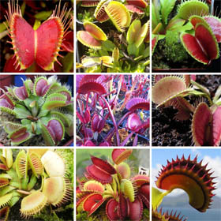

Цветок мухоловка
Дионея
или Венерина мухоловка экзотический цветок из вида хищных
растений семейства Росянковых.
Дионея
идеальный подарок для девушки на 8е марта, его трудно купить,
но достаточно просто вырастить самому. Семена прорастают в
течении 1-2 месяцев и уже имеют челюсти с зубцами по краям,
растут такие цветы в течении длительного времени от 2х до 5ти
лет.
Родной
дом цветка США, где он прорастает в заболоченных почвах,
поэтому его трудно залить, однако он требует много прямых
солнечных лучей или яркого искусственного света.
В
отличие от других подобных растений, дионея поистине настоящий
охотник, она молниеносно захлопывает ловушку за своей жертвой.
Каждая ловушка срабатывает 4-7 раза, а потом отмирает.
Идеальное
выращивание: В качестве почвенной смеси для дионеи необходим
мох-сфагнум (75 %) и смесь для укоренения корешков. Возможно
использование торфа и перлита в равных частях. Так, песок
желательно промыть в дистиллированной воде и прокипятить, а
перлит замочить в воде приблизительно на неделю. Полив
растения происходит также дистиллированной водой.
Существует множество сортов дионеи, наиболее интересные виды это - большой рот (Big Mouth) с очень крупными ловушками, и сорт красный дракон (Red Dragon) который имеет все части багрового цвета. Зимой венериной мухоловке необходим покой длительностью 3-4 месяца с температурой воздуха 5-10°С, что в полнее подходит для Российского климата. Цветок мухоловку изредка и только летом нужно кормить насекомыми, 1-2 мухи на цветок в месяц будет достаточно.